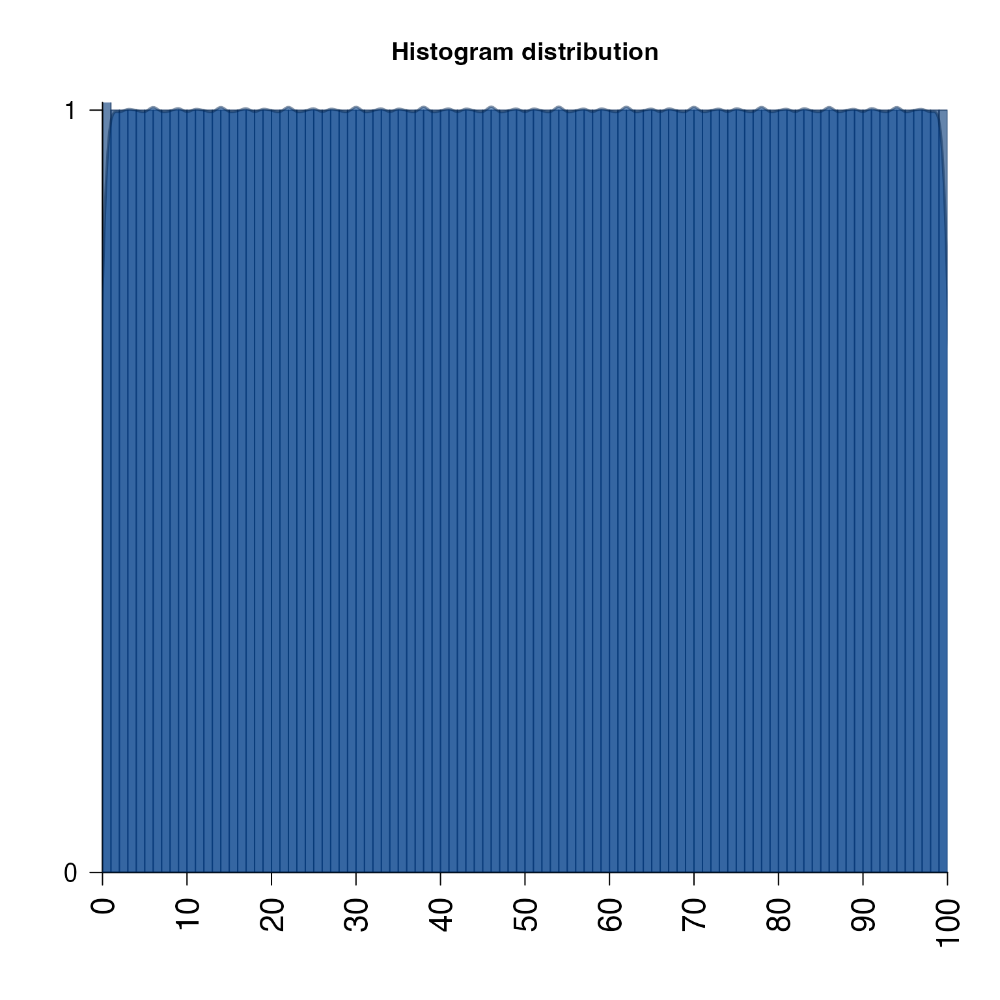

Display major and minor tick marks for log-scale axis,
with optional offset for proper labeling of log2(1+x).
minorLogTicksAxis(
side = NULL,
lims = NULL,
logBase = 2,
displayBase = 10,
offset = 0,
symmetricZero = (offset > 0),
majorCex = 1,
minorCex = 0.65,
doMajor = TRUE,
doLabels = TRUE,
doMinorLabels = TRUE,
asValues = TRUE,
padj = NULL,
doFormat = TRUE,
big.mark = ",",
scipen = 10,
minorWhich = c(2, 5),
logStep = 1,
cex = 1,
las = 2,
col = "black",
col.ticks = col,
minorLogTicksData = NULL,
verbose = FALSE,
...
)Arguments
- side
integer indicating the axis side, 1=bottom, 2=left, 3=top, 4=right.
- lims
NULL or numeric range for which the axis tick marks will be determined. If NULL then the corresponding
par("usr")will be used.- logBase
numeric value indicating the log base units, which will be used similar to how
baseis used inlog(x, base).- displayBase
numeric value indicating the log base units to use when determining the numeric label position. For example, data may be log2 scaled, and yet it is visually intuitive to show log transformed axis units in base 10 units. See examples.
- offset
numeric offset used in transforming the numeric data displayed on this axis. For example, a common technique is to transform data using
log2(1+x)which adds1to values prior to the log2 transformation. In this case,offset=1, which ensures the axis labels exactly match the initial numeric value prior to the log2 transform.- symmetricZero
logical indicating whether numeric values are symmetric around zero. For example, log fold changes should use
symmetricZero=TRUEwhich ensures a log2 value of-2is labeled-4to indicate a negative four fold change. IfsymmetricZero=FALSEa log2 value of-2would be labeled0.0625.- majorCex, minorCex
the base text size factors, relative to cex=1 for default text size. These factors are applied in addition to existing
par("cex")values, preserving any global text size defined there.- padj
numeric vector length 2, which is used to position axis labels for the minor and major labels, respectively. For example,
padj=c(0,1)will position minor labels just to the left of the tick marks, and major labels just to the right of tick marks. This example is helpful when minor labels bunch up on the right side of each section.- doFormat
logical indicating whether to apply
base::format()to format numeric labels.- big.mark, scipen
parameters passed to
base::format()whendoFormat=TRUE.- minorWhich
integer vector indicating which of the minor tick marks should be labeled. Labels are generally numbered from
2todisplayBase-1. So by default, log 10 units would add minor tick marks and labels to thec(2,5)position. For log2 units only, the second label is defined at 1.5, which shows minor labels atc(3, 6, 12), which are1.5 * c(2, 4, 8).- cex, col, col.ticks, las
parameters used for axis label size, axis label colors, axis tick mark colors, and label text orientation, respectively.
- minorLogTicksData
a list object created by running
jamba::minorLogTicks(), which allows inspecting and modifying the content for custom control.- verbose
logical indicating whether to print verbose output.
Value
A list with vectors of majorLabels, majorTicks, minorLabels,
minorTicks, and allLabelsDF which is a data.frame containing
all axis tick positions, with corresponding labels.
Details
This function displays log units on the axis of an
existing base R plot. It calls jamba::minorLogTicks() which
calculates appropriate tick and label positions.
Note: This function assumes the axis values have already been
log-transformed. Make sure to adjust the offset to reflect
the method of log-transformation, for example:
log2(1+x)would requirelogBase=2andoffset=1in order to represent values properly at or near zero.log(0.5+x)would requirelogBase=exp(1)andoffset=0.5.log10(x)would requirelogBase=10andoffset=0.
The defaults logBase=2 and displayBase=10 assume data
has been log2-transformed, and displays tick marks using the
common base of 10. To display tick marks at two-fold intervals,
use displayBase=2.
This function was motivated in order to label log-transformed
data properly in some special cases, like using log2(1+x)
where the resulting values are shifted "off by one" using
standard log-scaled axis tick marks and labels.
For log fold changes, set symmetricZero=TRUE, which will
create negative log scaled fold change values as needed for
negative values. For example, this option would label a
logBase=2 value of -2 as -4 and not as 0.25.
Note that by default, whenever offset > 0 the argument
symmetricZero=TRUE is also defined, since a negative value in
that scenario has little meaning. This behavior can be turned
off by setting symmetricZero=FALSE.
See also
Other jam plot functions:
adjustAxisLabelMargins(),
coordPresets(),
decideMfrow(),
drawLabels(),
getPlotAspect(),
groupedAxis(),
imageByColors(),
imageDefault(),
nullPlot(),
plotPolygonDensity(),
plotRidges(),
plotSmoothScatter(),
shadowText(),
showColors(),
smoothScatterJam(),
sqrtAxis(),
usrBox()
Examples
plotPolygonDensity(0:100, breaks=100);

plotPolygonDensity(0:100, breaks=100, log="x",
main="plotPolygonDensity() uses minorLogTicksAxis()",
xlab="x (log-scaled)");
#> Warning: argument ‘xlab’ is not made use of
#> Warning: In density.default(x, width = width, weight = weightFactor, ...) :
#> extra argument ‘xlab’ will be disregarded
 plotPolygonDensity(log2(1+0:100), breaks=100,
main="manually called minorLogTicksAxis(logBase=2)",
xaxt="n",
xlab="x (log-scaled)");
#> Warning: arguments ‘xlab’, ‘...’ are not made use of
#> Warning: In density.default(x, width = width, weight = weightFactor, ...) :
#> extra arguments ‘xaxt’, ‘xlab’ will be disregarded
minorLogTicksAxis(1, offset=1, logBase=2);
plotPolygonDensity(log2(1+0:100), breaks=100,
main="manually called minorLogTicksAxis(logBase=2)",
xaxt="n",
xlab="x (log-scaled)");
#> Warning: arguments ‘xlab’, ‘...’ are not made use of
#> Warning: In density.default(x, width = width, weight = weightFactor, ...) :
#> extra arguments ‘xaxt’, ‘xlab’ will be disregarded
minorLogTicksAxis(1, offset=1, logBase=2);
 plotPolygonDensity(log10(1+0:100), breaks=100,
main="manually called minorLogTicksAxis(logBase=10)",
xaxt="n",
xlab="x (log-scaled)");
#> Warning: arguments ‘xlab’, ‘...’ are not made use of
#> Warning: In density.default(x, width = width, weight = weightFactor, ...) :
#> extra arguments ‘xaxt’, ‘xlab’ will be disregarded
minorLogTicksAxis(1, offset=1, logBase=10);
plotPolygonDensity(log10(1+0:100), breaks=100,
main="using 'minorWhich=2:9'",
xaxt="n",
xlab="x (log-scaled)");
#> Warning: arguments ‘xlab’, ‘...’ are not made use of
#> Warning: In density.default(x, width = width, weight = weightFactor, ...) :
#> extra arguments ‘xaxt’, ‘xlab’ will be disregarded
minorLogTicksAxis(1, offset=1, logBase=10,
minorWhich=2:9);
plotPolygonDensity(log10(1+0:100), breaks=100,
main="manually called minorLogTicksAxis(logBase=10)",
xaxt="n",
xlab="x (log-scaled)");
#> Warning: arguments ‘xlab’, ‘...’ are not made use of
#> Warning: In density.default(x, width = width, weight = weightFactor, ...) :
#> extra arguments ‘xaxt’, ‘xlab’ will be disregarded
minorLogTicksAxis(1, offset=1, logBase=10);
plotPolygonDensity(log10(1+0:100), breaks=100,
main="using 'minorWhich=2:9'",
xaxt="n",
xlab="x (log-scaled)");
#> Warning: arguments ‘xlab’, ‘...’ are not made use of
#> Warning: In density.default(x, width = width, weight = weightFactor, ...) :
#> extra arguments ‘xaxt’, ‘xlab’ will be disregarded
minorLogTicksAxis(1, offset=1, logBase=10,
minorWhich=2:9);